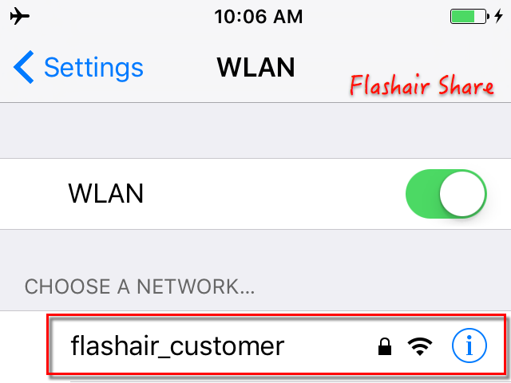
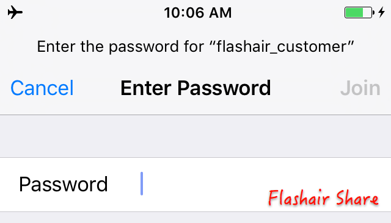
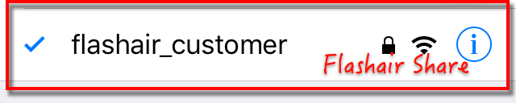

1. First of all, insert FlashAir into your camera and open the camera; or directly insert FlashAir into computer.
2. Open Settings of iPhone, go to Wifi and find Flashair hot spot.
3. click it, and it will switch to:
input the password and then click Join. The initial password is 12345678
4. When it looks like below, it means your iPhone has connected to FlashAir. You can then open Flashair Share, and it will show images of FlashAir.
Notice, if you have ever joined the FlashAir hot spot, it will automatically connect it when you join FalshAir next time.